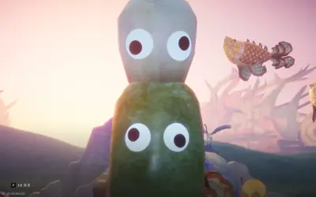
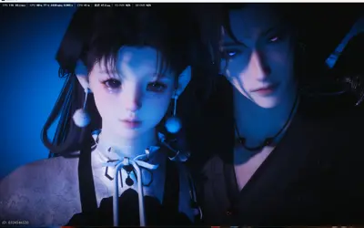
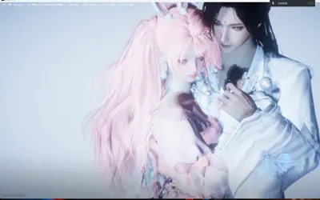

Dear 屈倩宇，
哈喽哈喽，好久没见，最近过的怎么样呢？好像最近到处都有雨，出门记得看下天气预报带伞哦，注意温度变化，穿好衣服别着凉也别热着了，我这边虽然说是下雨，但是基本下在了我在室内的时候，很少遇到需要打伞的时候，希望你也是这样，愿你出行皆遇晴空，无雨亦无烈日灼人。
这一段强制加班，不过其实还好，忙起来也不会想什么其他的东西了，而且我前一段状态不好有点影响工作进度，还被老板催了，最近加班补回来了已经。我已经渐渐习惯现在的生活了，只是周五的时候难得不加班，突然不太想回家，那一天有一点点，就一点点累，感觉回家后空荡荡的，没有人在等我了。
公司这边可能六月多能开始申请版号，后面游戏上线可能要到明年？我也说不好，一边找厦门的工作一边看吧，能有合适的工作就早点去厦门，没有的话可能要多待一两个月了。公司这边对我挺好的，我还是要好好完成自己的工作。
最近啊，有时候会想，我运气真的好好，从小到大，遇到的人都好好，无论是朋友、同学、同事，还是你，都是很好很好的人，网上路上认识的陌生人也都很好很好，会感觉这世界很温柔呢。
你呢？最近过的开心吗？有遇到什么我需要帮助的事情吗？真需要我记得打电话哦，我随时都在。那，好好吃饭（一天至少一顿饭，然后其他的也吃点东西吧，或者喝牛奶！），好好睡觉好好休息（可能还是少熬夜？不知道你最近什么作息，不过熬夜伤皮肤哦~嗯不说了你是医学生你比我懂这些），生理期到了记得喝红糖水，我最近发现好像还有姨妈汤这种东西，可惜给你买了你也不会收，那你自己需要了要记得买着喝哦；需要哄睡服务了可以喊我，嗯给我打电话喊醒哄你睡着我再睡就好。又啰嗦了，不好意思。
其实啊，本来在纠结要不要给你写信，怎么给你写信，前一段有所准备，但是还是没想好吧。直到今天刷小红看到，我其实之前也说过的，就是前不久地震嘛，有人会突然感觉活下来的日常都很珍贵，想要不留下遗憾去体验之前犹豫的事情，我之前也说，我把每一天都当作和你在一起的最后一天，所以我每天都在说我爱你，嗯，不留遗憾！而且我今天还有很多幸运的地方，后面有机会的话再和你说吧。
那，五二零快乐哦！最重要的，要身体健康，天天开心哦，万事胜意！
粥粥
自：粥粥